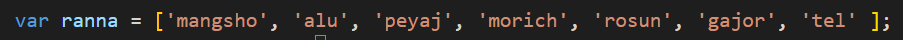

একটা Array এর মধ্যে থাকা Element গুলাকে acces নিয়ে কোন লুফে ব্যেবহার করতে হলে ,
প্রথমে একটা variable নিতে হবে ।
কোন Array এর Element নিয়ে সেটা কোন loop এর ব্যেবহার করার ক্ষেত্রে সাধারনত for loop ব্যেবহার করা হয় ।
তাই এখানেও for loop ই ব্যেবহার করছি ।
acces start
প্রথমে একটা array নিতে হবে

এখানে i variable টার সাহায্যে array এর Element সংখ্যার অনুযায়ী প্রাথমিক ভাবে একটা condition নিয়েছি
যা একদম সঠিক নিয়ম না । কারন এটা ততক্ষণ কাজ করবে যতক্ষণ পর্যন্ত এই array এর element সংখ্যা 7 থাকবে ,
কিন্তু পরবর্তীতে যদি এই array এর মধ্যের কোন Element কে বাদ দেয়া হয় বা অ্যাড করা হয় তখন সমস্যা হবে ।

তাই condition টা হওয়া উচিৎ i < variable.length ।

main part

এখানে element নামের variable এর মধ্যে ranna array এর element index number [4] ,, store করাতে output এ rosun ,, element টা condition অনুযায়ী 7 বার print হয়েছে ।

এবার loop এর ভেতরের element নামের variable এর মধ্যে ranna[i]
ভ্যেলুটা store করাতে Loop iteration এর সময় i এর মান হিসাবে যে সংখ্যা থাকে সেই ranna array এর index অনুযায়ী সেই element টা print হয় ।
অর্থাৎ Loop iteration এর সময় loop এর condition এ থাকা variable এর মধ্যে যদি 3 store হয় তবে output এ array index অনুযায়ী 3 নাম্বার element টা print হবে ।